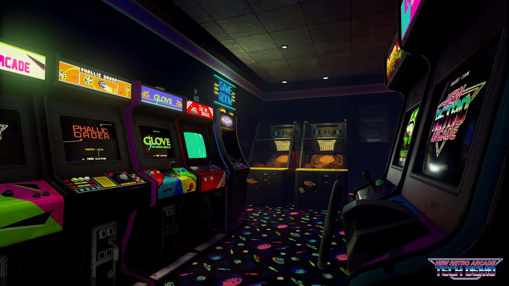
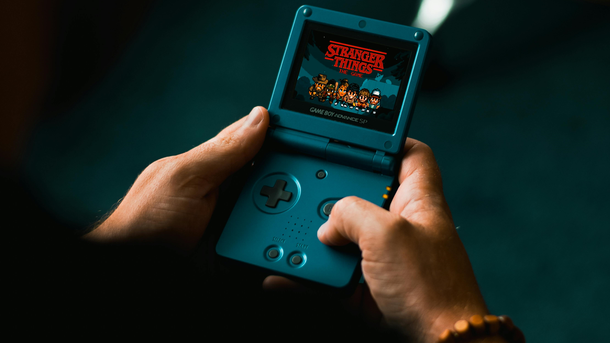
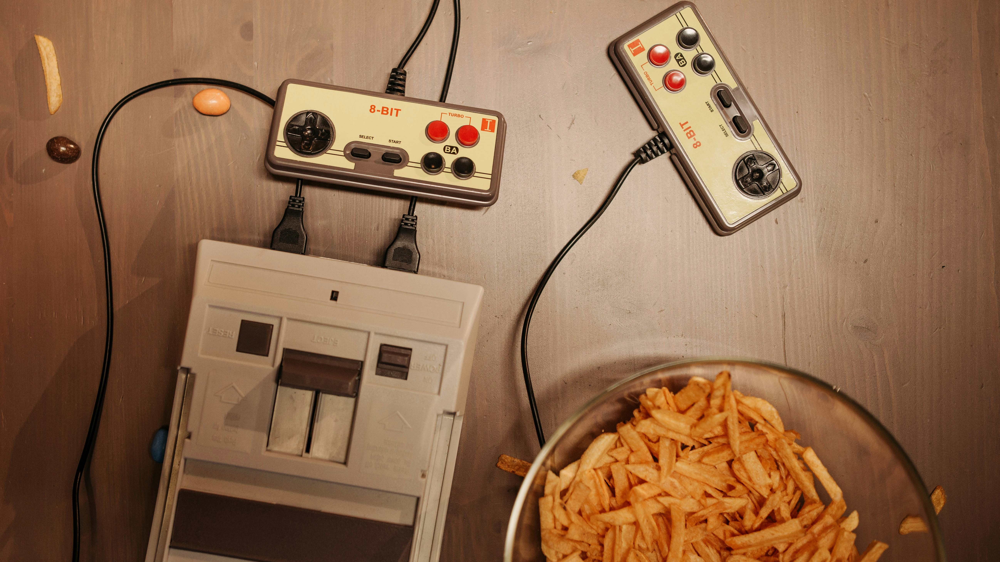
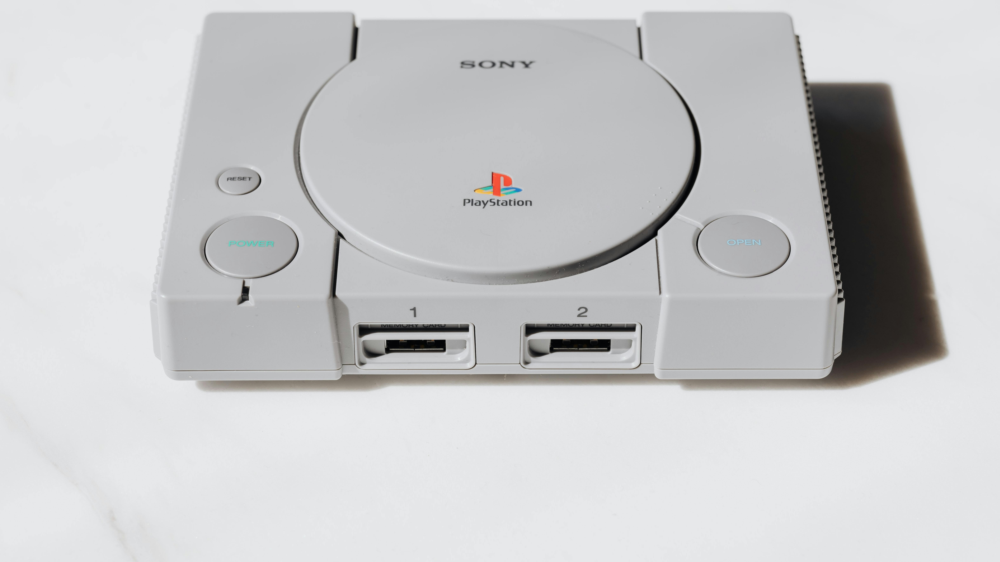
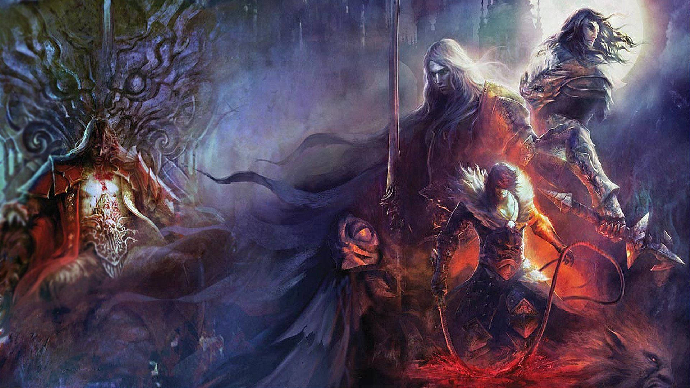
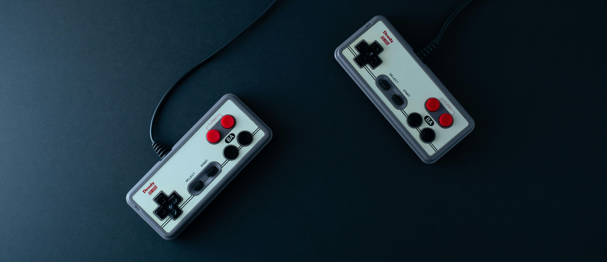

*Oyun Tanıtımları ve İncelemeler: Her oyunun ayrıntılı tanıtımları ve
incelemeleriyle, hangi oyunu
seçeceğinize karar vermenizde size yardımcı oluyoruz. Grafikleri, oynanışı, hikayesi ve daha
fazlasıyla
ilgili detaylı bilgilere ulaşabilirsiniz.
*Klasik Oyunlar: Super Mario, Sonic the Hedgehog, Zelda ve daha birçok
efsanevi klasik oyunu
bulabilirsiniz. Oyun dünyasının en unutulmaz karakterleri ve maceraları burada sizleri bekliyor.
*Röportajlar ve Makaleler: Oyun dünyasının efsanevi yaratıcılarıyla yapılmış
röportajlar, oyun
endüstrisinin gelişimini ve oyunların arkasındaki hikayeleri keşfetmenize olanak tanır. Ayrıca,
eski
nesil oyunların kültürel ve tarihsel önemini ele alan makalelerimizi de okuyabilirsiniz.
*Topluluk ve Etkinlikler: Eski nesil oyun meraklıları için çevrimiçi
etkinlikler, turnuvalar,
canlı
yayınlar ve daha fazlasını düzenliyoruz. Topluluğumuza katılarak eski nesil oyun sevginizi diğer
hayranlarla paylaşabilirsiniz.

Oyun Kültürü Nasıl Oluştu?
Eski nesil oyunlar, genellikle 1970'lerin sonlarından 2000'lerin başlarına kadar olan dönemde
geliştirilmiş ve popüler hale gelmiş oyunlardır. Bu dönem, video oyun endüstrisinin büyümesi ve ev
konsolu teknolojisinin yaygınlaşmasıyla karakterizedir. İşte bu oyun türlerinin ortaya çıkmasını
sağlayan bazı temel faktörler:

*Ev Konsollarının Yaygınlaşması: 1970'lerin sonlarından itibaren
ev bilgisayarları ve
oyun konsolları popülerlik kazanmaya başladı. Atari 2600 gibi konsollar, evlerde oyun
oynamayı daha erişilebilir hale getirdi ve birçok insanın oyun deneyimini şekillendirdi.
*Arcade Oyunlarının Yaygınlaşması: 1980'lerde, arcade
salonları
popülerlik kazandı ve
birçok efsanevi oyun bu ortamda ortaya çıktı. Pac-Man, Space Invaders ve Donkey Kong
gibi oyunlar, geniş kitlelere ulaştı ve bir oyun kültürünün oluşmasına katkıda
bulundu.

*Teknolojik İlerlemeler: Teknolojinin gelişmesiyle birlikte,
oyun
geliştiricileri daha karmaşık grafikler, ses efektleri ve oyun mekanikleri
sunabilecekleri yeni yollar aradılar. Bu dönemde, oyun sistemlerinin bellek kapasiteleri
ve işlem güçleri arttıkça, daha büyük ve daha karmaşık oyunlar mümkün hale geldi.
*Oyun Geliştiricilerinin Yaratıcılığı: Bu dönemde, birçok
oyun
geliştiricisi yeni ve yaratıcı fikirlerle ortaya çıktı. Örneğin, Super Mario
Bros.'un
yaratıcısı Shigeru Miyamoto, oyunlarına benzersiz bir karakter ve dünya yaratmayı
hedefledi ve bu sayede oyun endüstrisinde devrim yarattı.

*Popüler Kültür ve Rekabetçi Pazar: Oyun endüstrisi giderek daha
rekabetçi hale geldi ve bu da geliştiricilerin daha yenilikçi ve çekici oyunlar
yapmalarını teşvik etti. Ayrıca, popüler kültürdeki etkiler, oyun geliştiricilerinin
yeni fikirler bulmalarına ve oyunlarını geniş kitlelere pazarlamalarına yardımcı oldu.
Super Mario Bros:
Nintendo'nun efsanevi oyunu olan Super Mario Bros., 1985 yılında piyasaya sürüldü. Oyun, Mario'nun
prensesi Peach'i kurtarmak için Bowser'ın kalelerini geçmesini ve engelleri aşmasını konu alır.
The Legend of Zelda:
1986 yılında Nintendo tarafından yayınlanan bu efsanevi seride, oyuncular Hyrule Krallığı'nı
keşfeder ve Zelda'yı kurtarmak için maceraya atılır. Oyun, açık dünya keşifleri, bulmacalar ve
savaşlarla doludur.
Sonic the Hedgehog:
Sega'nın ünlü hızlı hedgehog karakteri Sonic'in başrolünde olduğu bu oyun, 1991'de yayınlandı.
Oyuncular, Sonic'in Dr. Robotnik'in kötülüklerini engellemek için hızlı tempolu seviyelerde koştuğu
bir maceraya katılırlar.
Pac-Man:
Namco tarafından 1980 yılında yayınlanan bu klasik oyun, sarı yuvarlak bir karakter olan Pac-Man'in
labirentlerde hayaletlerden kaçarak noktaları yemesini ve meyveleri toplamasını konu alır.
Tetris:
Alexey Pajitnov tarafından 1984 yılında yaratılan bu bulmaca oyunu, düşen renkli blokları
düzenleyerek tam dolu bir yatay satır oluşturmayı amaçlar. Oyun, basit ama bağımlılık yapan bir
oynanışa sahiptir.
Donkey Kong:
Nintendo'nun klasik platform oyunu Donkey Kong, 1981 yılında piyasaya sürüldü. Oyuncular, Mario'nun
atlayarak ve tırmanarak engelleri aşarak Kong'u yenmesine yardımcı olur.
Street Fighter II:
Capcom tarafından 1991 yılında yayınlanan bu dövüş oyunu, çeşitli karakterlerin birbirine karşı
dövüştüğü bir dövüş turnuvasını konu alır. Oyun, çeşitli özel hareketler ve stratejik dövüş
mekaniğiyle tanınır.
Pokémon Red/Blue:
Nintendo'nun efsanevi Pokémon serisinin ilk oyunları olan Pokémon Red ve Blue, 1996 yılında piyasaya
sürüldü. Oyuncular, Pokémon eğiterek savaşlara katılır ve dünyayı dolaşarak farklı Pokémon türlerini
yakalarlar.
Mega Man:
Capcom tarafından 1987 yılında piyasaya sürülen bu platform oyununda, oyuncular Mega Man karakterini
kontrol eder ve kötü Robot Master'ları yenmek için çeşitli seviyeleri geçerler.

Castlevania:
Konami tarafından 1986 yılında yayınlanan bu aksiyon-macera oyunu, vampir avcısı Simon Belmont'un
Dracula'nın şatosuna girip onu yenmeye çalışmasını konu alır.
Nintendo'nun efsanevi oyun tasarımcısı Shigeru Miyamoto ile yapılan bir röportaj, Mario, Zelda ve
diğer klasik oyun serilerinin yaratılmasına ve geliştirilmesine ilişkin içgörüler sunabilir.
Miyamoto'nun oyun tasarımı felsefesi ve yaratıcılığına dair bilgileri içerebilir.
Bu makale, 1980'lerin ve 1990'ların popüler oyunlarını ve oyun endüstrisinin büyümesini ele
alabilir. Ayrıca, eski nesil oyunların teknolojik ve kültürel etkilerini incelerken, modern oyun
endüstrisinin bu mirası nasıl etkilediğini de tartışabilir.
Sega'nın efsanevi maskotu Sonic'in yaratıcısıyla yapılan bir röportaj, oyunun nasıl ortaya
çıktığını, karakterin tasarım sürecini ve oyunun kültürel etkisini ele alabilir. Bu röportaj,
Sonic'in arkasındaki hikayeyi ve yaratıcısının vizyonunu anlamamıza yardımcı olabilir.
Bu makale, Pac-Man'in yükselişini ve kültürel etkisini inceler. Oyunun nasıl bir fenomen haline
geldiğini, oyun endüstrisindeki yeri ve Pac-Man'in popüler kültüre olan katkılarını tartışabilir.
Atari'nin klasik oyunlarından sorumlu olan geliştiricilerle yapılan bir röportaj, oyun endüstrisinin
erken dönemlerine ışık tutabilir. Atari'nin efsanevi oyunlarının arkasındaki hikayeleri ve
geliştiricilerin oyun yapma süreçleri hakkında bilgi verir.
Bu tür röportajlar ve makaleler, eski nesil oyunlar hakkında derinlemesine bilgi ve anlayış sağlar
ve oyunseverlere oyunların yaratılma sürecini ve kültürel etkisini daha yakından
inceleme fırsatı sunar.

HAKKIMIZDA
Yeni Nesil Oyun Kütüphanesi, oyunseverler için kapsamlı bir platform sunar. Misyonumuz, oyuncuların unutulmaz deneyimler yaşamalarını sağlamak ve oyun kültürünü bir araya getirmektir.
Kütüphanemizde geniş bir oyun koleksiyonu bulunmaktadır; klasiklerden en son çıkanlara kadar her türden oyunu barındırıyoruz. Yüksek kaliteli içeriklerle, oyunseverlerin ilgisini çeken her şeyi keşfetmelerini sağlamak için çalışıyoruz.
Yeni Nesil Oyun Kütüphanesi olarak, oyuncuların heyecan verici dünyaları keşfetmelerine olanak tanıyan bir ortam yaratmayı amaçlıyoruz. Ekibimiz, oyun sektöründeki uzmanlar ve tutkulu oyunculardan oluşuyor ve her zaman en iyi oyun deneyimini sunmak için çalışıyor.
Siz de bu heyecan verici yolculuğa katılın ve Yeni Nesil Oyun Kütüphanesi'nin bir parçası olun. Oyun dünyasının sınırlarını keşfetmek için bize katılın!
Yorumlar
connect_error) {
die("Bağlantı hatası: " . $conn->connect_error);
}
// Yorumları çekme sorgusu
$sql = "SELECT ad, soyad, yorum, tarih FROM yorumlar ORDER BY tarih DESC";
$result = $conn->query($sql);
if ($result->num_rows > 0) {
while($row = $result->fetch_assoc()) {
echo "
Siz de deneyimli ekibimize katılmak veya bir şikayetinizi iletmek için hemen
bizimle
iletişime geçin. İşbirliği için sabırsızlanıyoruz veya geri bildiriminizi almak
bizi
mutlu eder. İhtiyaçlarınızı dinlemek ve çözümler sunmak için buradayız.
İlginizi çekebilecek siteler
1. GOG.com- Eski ve klasik oyunların dijital olarak satıldığı platform.